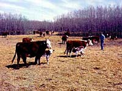

Land that is unsuitable for cultivation can be used to feed and pasture beef and dairy cattle, sheep and goats. Poultry and hogs can utilize surplus grain as well as grain unsuitable for human consumption. Often farms are mixed, growing both livestock and crops, allowing farmers different options for production and marketing, depending upon economics at the time.
Animal Roles in Saskatchewan

Saskatchewan people have benefitted extensively from animal use throughout the years. During the initial European settlement of the prairies, animals were used for power and food. Cattle were a dual purpose animal, able to pull ploughs and carts, or provide milk or meat as food. Horses were also used for power because they were faster and easier to control. Horses were more expensive, though, and they did not provide the food element that cattle did.
Today the animal's primary purpose is as a source of food. Modern farming has moved away from using animals for power in exchange for the quicker and more powerful fossil-fuel driven machines. Machines are very expensive, requiring fuel and repair, with a loss of many of the inherent benefits animals used to provide, but they significantly reduce labour inputs, allowing a single farmer to cultivate much more land, or handle many more tasks in a day.
Most Saskatchewan animal products are exported. Benefits to Saskatchewan people include financial returns to the primary producer (farmer), as well as provision of jobs and economic gain for food processors, feed suppliers, and people involved in processing and service jobs related to livestock.
|